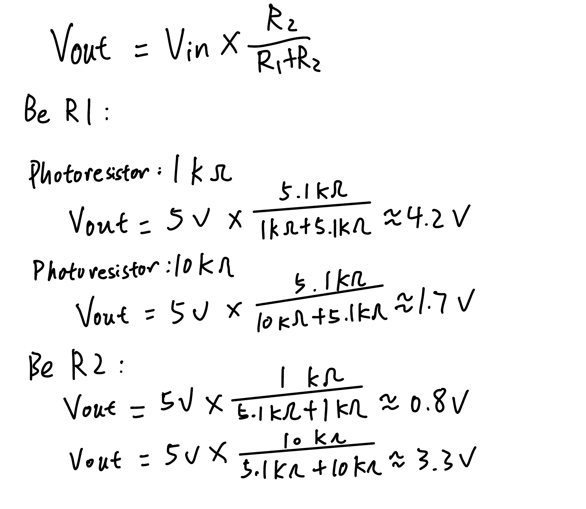
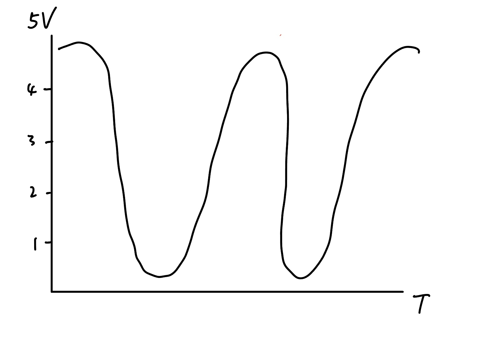

Input Output!

This is my final result, as the sensor value changes, the brightness of the LED also changes.
Here is all the documentation for assignment 3!
This is the schematic for my 3 LEDs and 1 photoresistor connected to the Arduino, and the calculation for each resistance.
Here is my circuit, as the calculation showed above we can see that the resistance for red LED is 160 ohms and for blue LED is 85 ohms, so I picked two 220 ohms resistors, one 100 ohms resistor and one 5k1 resistor for the voltage divider.
int SENSOR = A0; // create an variable name for pin A0 called SENSOR
int RED_LED = 10; // create an variable name for pin 10 called RED_LED
int BLUE_LED = 5; // create an variable name for pin 5 called BLUE_LED
void setup() {
pinMode(RED_LED, OUTPUT); // initialize digital pin RED_LED as an output.
pinMode(BLUE_LED, OUTPUT); // initialize digital pin BLUE_LED as an output.
Serial.begin(9600); // Sets the data rate in 9600 bits per second
}
void loop() {
int SENSORval = analogRead(SENSOR); // read the state of the sensor value
// set the value range according to the serial monitor,
// map the sensor value with LED brightness.
SENSORval = map(SENSORval, 300, 900, 0, 255);
if (SENSORval > 0) { // Set the condition as the sensor value changes,
analogWrite(RED_LED, SENSORval); // the brightness of the LED also changes
analogWrite(BLUE_LED, SENSORval);
} else {
digitalWrite(BLUE_LED, LOW);
digitalWrite(RED_LED, LOW);
}
Serial.println(SENSORval); // print the sensor results to the serial monitor
}
This is my final result, as the sensor value changes, the brightness of the LED also changes.
In your voltage divider, can the variable resistor be either R1 or R2 or does it need to be one or the other? Justify your answer with example calculations.
I think the variable resistor can be either R1 or R2, but the output voltage is different.
Draw a graph where the x-axis is time and the y-axis is voltage. Plot the voltage at V-measure of your voltage divider of your shared gif.
AnalogWrite and analogRead are respectively 8-bit and 10-bit values. Imagine you had 10-bit PWM and a 16-bit analog-to-digital converter instead. How would this change your map() code? Explain your answer.
I think the value that takes into the map() code should be different. If the analogWrite converted to 10-bit PWM, the range is 0-1024. If the analogWrite converted to 16-bit PWM, the range is 0-65536.